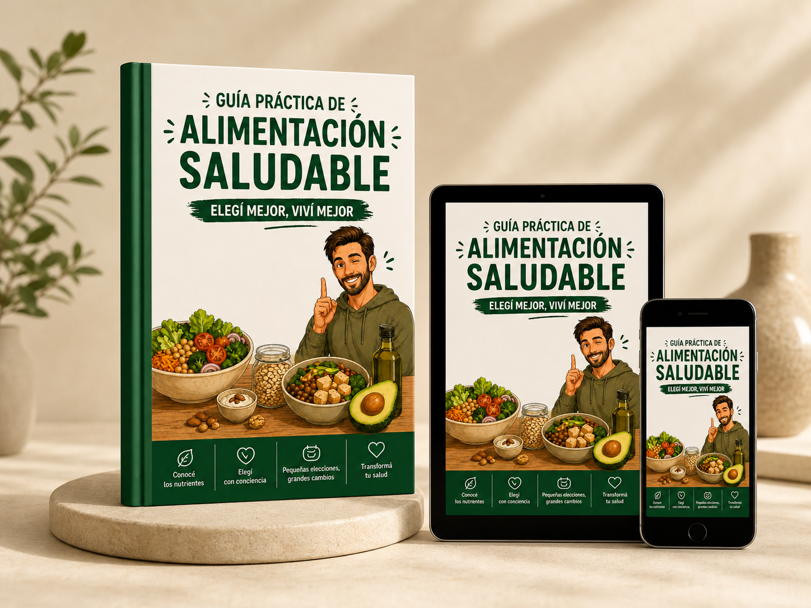
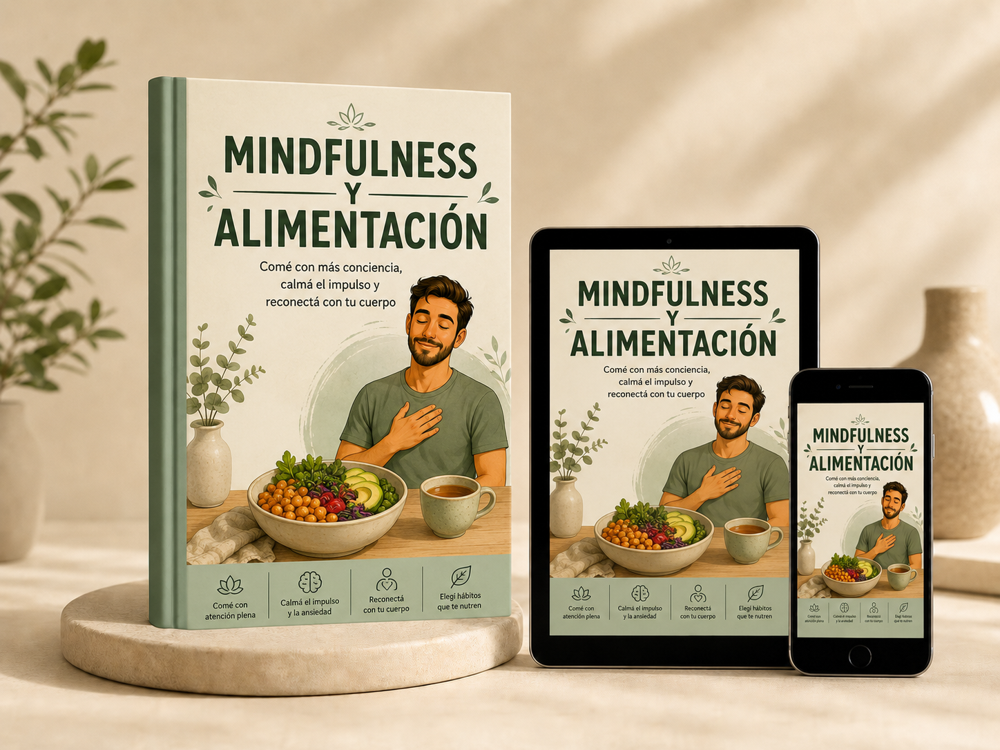
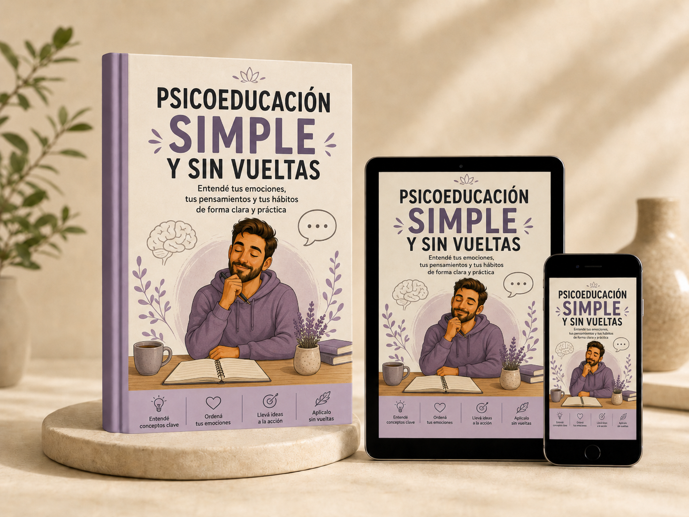
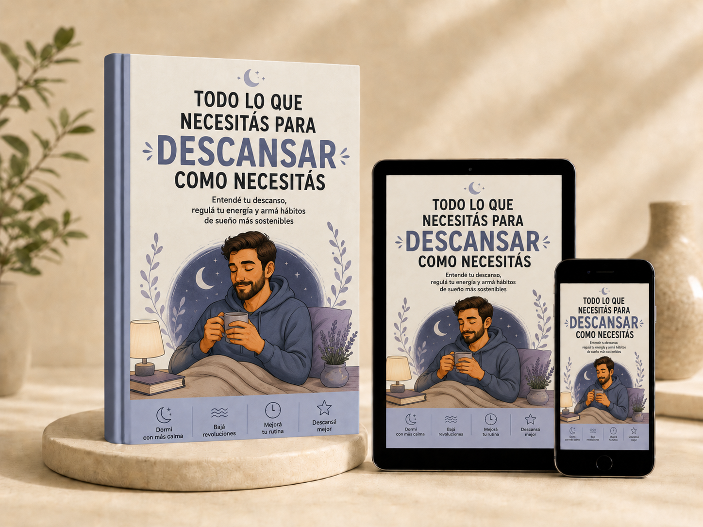
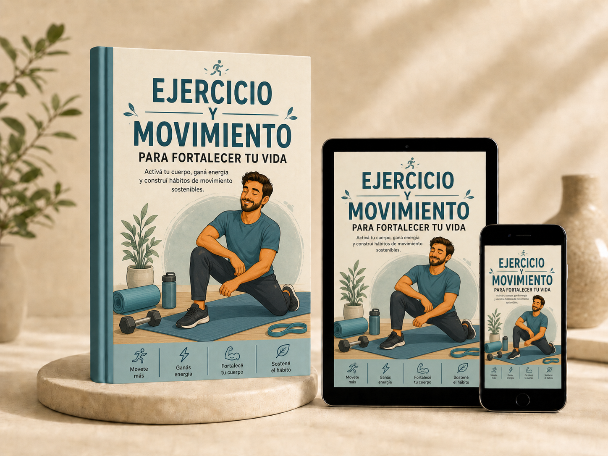

Comé mejor sin
vivir a dieta
Un sistema práctico para ordenar tu alimentación, moverte más y descansar mejor.
No necesitás otra dieta rígida, culpa ni exigencias imposibles. Necesitás un sistema que puedas sostener en la vida real.



Cuidarte no debería sentirse tan complicado
Tal vez ya sabés muchas cosas. Sabés que te haría bien comer mejor, moverte un poco más, dormir mejor y organizarte. Pero una cosa es saberlo. Otra muy distinta es sostenerlo cuando aparece el cansancio, la ansiedad, el bajón, la falta de tiempo o el famoso "ya fue".
"Sé lo que tengo que hacer, pero no lo sostengo."
"Arranco el lunes y después abandono."
"Como distinto cuando estoy ansioso/a."
"Me falta constancia."
"Duermo mal y después tomo peores decisiones."
"Cuando rompo el plan, siento que ya arruiné todo."
No es falta de voluntad. Muchas veces falta sistema.
No necesitás vivir a dieta.
Necesitás ordenar tus hábitos.
Este kit digital te ayuda a construir hábitos más saludables integrando alimentación práctica, recetas, meal prep, psiconutrición, regulación emocional, mindfulness, descanso, ejercicio físico y herramientas de seguimiento con IA.
Un sistema integral
Alimentación práctica
Nutrición básica, armado de platos, recetas, meal prep, lista de compras y organización del entorno.
Psiconutrición
Hambre física, hambre emocional, antojos, impulsos, culpa, pensamientos permisivos y adherencia.
Movimiento y descanso
Ejercicio físico, movimiento diario, NEAT, sueño, higiene del descanso y planes mínimos para días reales.


Organización e IA
Checklists, registros, prompts de IA, detección de patrones y ajustes sin obsesión.
Todo lo que recibís
Un paquete de recursos listos para descargar y aplicar hoy mismo.
Diseño limpio y amigable para leer en cualquier dispositivo.
Qué vas a trabajar
El paso a paso que encontrarás dentro de la guía.
Aprendé los pilares de la nutrición sin tecnicismos. Entendé cómo funcionan los macronutrientes y qué necesita tu cuerpo sin volverte loco contando calorías.
El paso a paso visual y sencillo para estructurar comidas equilibradas. Incluye un recetario adaptable.
Estrategias para no perder horas en la cocina. Cómo organizar tu heladera, hacer compras inteligentes y modificar tu entorno.
Diferencia entre hambre física, emocional y antojos. Desarrollá herramientas para gestionar el acto de comer con más consciencia y menos culpa.
Qué hacer cuando baja la motivación. Estrategias conductuales para mantener la constancia en el tiempo real.
El impacto del sueño, cómo moverte sin castigarte y cómo usar Inteligencia Artificial para acompañar tus hábitos.
Este kit es para vos si…
Querés comer mejor, pero no querés caer en dietas rígidas.
Necesitás organizar tus comidas y compras fácilmente.
Te cuesta sostener cambios cuando baja la motivación o estás ansioso/a.
Querés moverte más y dormir mejor, pero no tenés una rutina clara.
Este kit NO es para vos si…
Buscás una dieta extrema, mágica o reglas rígidas sobre alimentos prohibidos.
Necesitás un tratamiento médico, nutricional o psicoterapéutico personalizado.
Presentás señales claras de un trastorno de la conducta alimentaria.
Un enfoque humano
No siempre fallamos por falta de información. Muchas veces fallamos porque el sistema que intentamos sostener no encaja con nuestra vida real. Por eso, este kit une:

Comenzá a ordenar tus hábitos
Elegí el formato que mejor se adapte a tu necesidad.
Kit Digital Completo
Para avanzar a tu propio ritmo.
- Guía principal en PDF y Workbook
- Recetario y plantillas de meal prep
- Listas de compras y checklist semanal
- Prompts de IA y recursos de psiconutrición
Kit + Orientación Individual
- Todo el material del Kit Digital
- 1 Sesión de Orientación (45 min)
- Revisión de tu situación actual
- Priorización de objetivos y primeros pasos
- Adaptación del sistema a tu contexto
Preguntas Frecuentes
No. Es un sistema integral de hábitos. No prohíbe alimentos ni te da menús rígidos; te enseña a armar tus propias comidas.
Sí, uno de los módulos incluye estrategias de "meal prep" y organización para personas con poco tiempo.
Aborda la psiconutrición, herramientas para entender el hambre emocional, la ansiedad, la culpa y cómo superar el pensamiento de "todo o nada".
No, la sesión de orientación no es psicoterapia. Es un espacio enfocado exclusivamente en revisar tu situación actual respecto a tus hábitos y adaptar las herramientas del kit.
No. Este material es psicoeducativo. Si tenés o sospechás tener un TCA, necesitás atención clínica personalizada por profesionales especializados.
El material es 100% digital. Una vez realizada la compra, recibirás el acceso a los archivos en tu correo electrónico de inmediato.
Aclaración importante
Este material es educativo y psicoeducativo. No reemplaza una consulta médica, nutricional ni psicoterapéutica. No promete curar obesidad, ansiedad, depresión, trastornos de la conducta alimentaria ni ninguna condición clínica. Si presentás atracones frecuentes, conductas compensatorias, restricción extrema, miedo intenso a engordar, pérdida significativa de peso, culpa intensa o malestar importante con comida o cuerpo, se recomienda pedir ayuda profesional especializada.